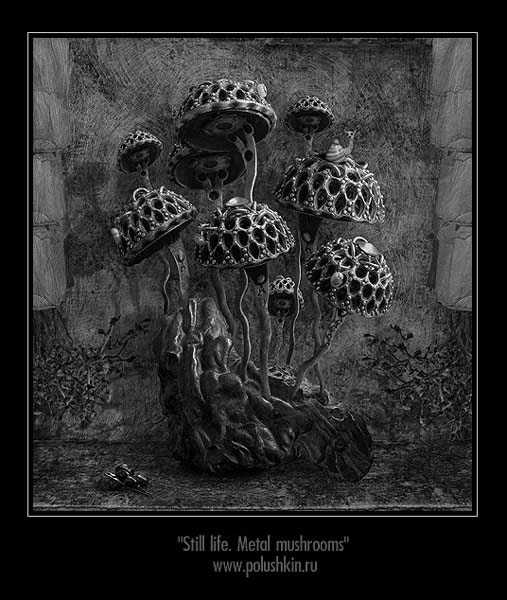

Andrew Polushkin
Still Life: Metal Mushrooms
 |
 |
MOCA has long provided a forum for Andrew Polushkin's art, under the banner of black gothic art. He is based in St. Petersburg, Russia. This is a fresh look at his work, all of which has been created in the years 2002-2003. Despite its dark themes and style, some of the work may espouse a kind of whimsical charm, distinguishing it from other work in this genre. He is self-trained, and uses Photoshop and Meta Creations Painter. He has been exhibiting his art and participating in the St. Petersburg art scene since 1993, and his art now hangs in the First Petersburg Museum of Private Collections, and in private collections in the USA, Germany and France. He is represented in this current MOCA exhibit with 16 images.